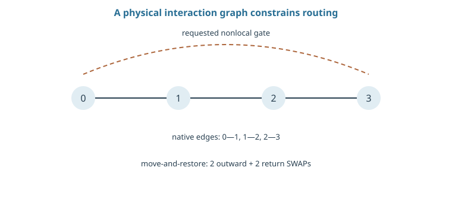
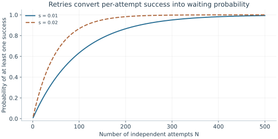

Starting point: Chapters 1–16; physical concepts and approximations are introduced as needed.
Anchor example: Routing a distant interaction across a line of qubits.
This lesson includes explanations, worked examples, and problems with solutions. Advanced results whose proofs are outside the chapter are identified explicitly.
A circuit diagram lets any two qubits interact, and lets every gate start the moment its inputs are ready. A device allows only certain pairs to interact, shares control channels between gates, and connects separate modules with links that succeed at random. The same logical circuit can therefore need very different physical operations on different machines. How do we turn a circuit into a timed physical schedule, and what does the conversion cost?
We first describe a device's interactions as a graph and count the extra operations needed when two qubits are not neighbours. Shared hardware then forbids some gates from running together, which gives lower bounds on schedule length. Linking modules with photons adds a random waiting time, and the stored qubits must survive it. Finally, fabrication yield limits how many usable sites a chip has, and following one task from output back to physical operations gives its true cost in time.
Our first question is what it costs to apply a gate between two qubits that cannot interact directly.
17.1 Connectivity
A device offers interactions only between certain pairs, and it can run only some operations at once. How many extra operations does a distant gate need, and how long must a schedule be? Moving a state along a path of interactions gives an explicit routing cost. Shared channels and dependencies between gates then give lower bounds on the schedule's duration.
17.1.1 Local and nonlocal interactions
How do we describe which qubits can interact? Draw each qubit as a vertex and each available pair interaction as an edge. This connectivity graph says which operations are possible, not how fast they are or which can run at the same time.
What does a gate between distant qubits cost? Suppose the two states sit \(d\) edges apart along a path. One simple strategy moves one state along the path with \(d-1\) SWAPs, performs the gate, and moves the state back. A SWAP can be built from three CNOTs, when those gates and their directions are available. Restoring the original placement therefore adds \(6(d-1)\) CNOTs, which for \(d=4\) is 18 extra gates. A compiler can sometimes skip the return trip by tracking the new placement, so this is the cost of one explicit strategy, not a lower bound. The native gates, direction reversal, transport, and spectator constraints all change it.
17.1.2 Routing and scheduling
Once the gates are local, how long does the schedule take? Two gates on disjoint edges are logically independent, yet a shared control channel or a crosstalk rule may forbid them to overlap. If \(M\) requested gates all need one bus, the total duration is at least the sum of their bus occupancies. A chain of gates that depend on one another gives a second lower bound, its summed duration.
The schedule must satisfy the larger of these bounds, and it must also include initialization, measurement, and reset waits. Every idle interval adds exposure to relaxation and dephasing. A claimed connectivity advantage is therefore judged by the compiled, timed schedule, not by the average graph distance or a statement of all-to-all access.

The dashed curve is the requested operation, not a native interaction. For endpoints at distance three, the explicit move-and-restore strategy uses four SWAPs. Other compilers may retain a changed placement.
Problem 17.1. On a line A–B–C, how can an A–C interaction be made local?
Worked solution
Swap A and B, then interact the state now at B with C. A restoring SWAP is needed only if the later schedule requires the original placement. In a CNOT decomposition one SWAP costs three CNOTs.
17.2 Modular Systems
One chip or trap holds only so many qubits, so larger machines join modules with photonic links. How long does a link take to succeed, and what happens to the stored qubits meanwhile? Independent attempts make the waiting time geometric, with a mean set by the success probability. Averaging a memory's decay over that random wait then gives the coherence that survives.
17.2.1 Photonic links
How long does a link take? A module stores and processes qubits locally, while its photonic interface attempts remote entanglement. Suppose each required photon is delivered and detected with probability \(\eta\). A two-photon protocol with accepted-pattern factor \(q\) then succeeds per attempt with probability \(s=q\eta^2\), before other faults.
With independent attempts, the first success occurs at attempt \(n\) with probability \(s(1-s)^{n-1}\). Summing \(n\) times this distribution gives a mean of \(1/s\) attempts, so an attempt period \(\tau\) gives a mean wait \(\tau/s\). Propagation, the message announcing success, reset, and local preparation all contribute to \(\tau\). Faster local gates do not shorten a link limited by this waiting process.
17.2.2 Communication and memory
What survives in memory during that random wait? Suppose the memory's coherence decays as \(e^{-t/T_2}\), and success at attempt \(n\) means a wait of \(n\tau\). Averaging over attempts gives
For \(s=0.01\) and \(\tau/T_2=0.001\), this is about 0.909. Evaluating the exponential at the mean wait gives \(e^{-0.1}\simeq0.905\) instead, because coherence depends nonlinearly on time and the waiting distribution has a long tail. This toy model omits disturbance from reset and any dependence between attempts. When several links must all be ready together, the waiting-and-storage problem goes beyond one geometric distribution.

The curves are 1−(1−s)^N. Mean attempts are 1/s, while the distribution has a long tail that affects memory waiting and multi-link scheduling.
Problem 17.2. A link succeeds with probability 0.02 per 10 μs attempt. Find its mean waiting time.
Worked solution
It is 10 μs/0.02 = 500 μs under independent trials, with no extra reset or communication delay. A memory requirement cannot be inferred from this mean alone; long waits also occur.
17.3 Scaling Design
Adding sites adds chances for a site to fail, and adding tasks adds time. How many usable sites does a large chip have, and how long does a real task take? Independent yield makes a perfect array improbable, which forces designs that tolerate defects. Tracing one task from its required output back to physical operations then gives its cost in elapsed time.
17.3.1 Fabrication and yield
How likely is a perfect array? If each of \(N\) required sites is independently usable with yield \(y\), all of them work with probability \(y^N\). For \(y=0.999\) and \(N=1000\), that is only about 0.368. Most processors are not therefore useless: spare sites, rerouting, and codes that tolerate missing qubits can absorb some defects.
Those remedies need connectivity and control resources of their own. A missing site in a line breaks a route, while the same defect in a richly connected layout may be bypassed. Defects that cluster in space also break the independence assumption. So the useful count is of calibrated, usable sites and interactions, given how the architecture compiles around its actual defects, not the number of sites drawn on the mask.
17.3.2 Architecture-aware resource counts
How long does the Bell-pair experiment really take? Attach a physical schedule to it: two resets, one single-qubit pulse, routing if needed, the entangling gate, basis rotations for verification, acquisition, and the return to a usable state. That gives the duration of one shot. The time for adequate statistics is a different quantity.
If the shot cycle is 100 μs and 10,000 shots are needed, acquisition alone takes one second. A conditional protocol that accepts one shot in ten needs about ten seconds for the same accepted count, before calibration and repeated runs at different durations. Encoded computations add the repeated checks, decoding, and auxiliary-state preparation of error correction. The honest accounting starts from the output a task needs and traces every physical operation it requires into time and resources.
Problem 17.3. For 1,000 independent components of yield 0.999, estimate perfect-array yield.
Worked solution
It is 0.999¹⁰⁰⁰ ≈ 0.368. Redundancy and repairable connectivity can be essential even when individual yield is high.
Error correction adds a structured workload of its own, made of repeated parity checks. What must the hardware do to measure those checks without destroying the information they protect?
Worked model check. A gate is required between vertices four edges apart. Count added CNOTs for the stated move-and-restore SWAP strategy.
Worked solution
Three outward and three return SWAPs give six SWAPs, or 18 CNOTs under the available-CNOT assumption. A placement-tracking compiler may avoid the return cost.
These exercises draw on the whole chapter. Attempt each question before opening a hint, explain your reasoning, then compare it with the worked solution.
Using the move-and-restore strategy, how many extra CNOTs does a two-qubit gate between vertices \(d=6\) edges apart cost? If each CNOT fails with probability \(5\times10^{-3}\), roughly what failure probability does routing add?
Hint 1
Extra CNOTs: \(6(d-1)\).
Hint 2
Small independent failures add.
Worked solution
\(6\times5=30\) extra CNOTs, adding roughly \(30\times5\times10^{-3}=0.15\) failure probability, far more than the intended gate itself. Distance on the connectivity graph is a direct cost. Better placement, tracking a changed layout instead of returning, or native longer-range interactions can reduce it.
A remote link succeeds with probability \(s=0.005\) per \(20\) μs attempt. Find the mean waiting time and the probability that the wait exceeds \(10\) ms.
Hint 1
Mean wait \(\tau/s\).
Hint 2
\(P(\text{more than }k\text{ attempts})=(1-s)^k\).
Worked solution
Mean wait \(20\ \mu\mathrm s/0.005=4\) ms. Exceeding \(10\) ms means more than \(500\) failed attempts: \((0.995)^{500}\approx e^{-2.5}\approx0.08\). One link in twelve takes more than two and a half times the mean, which matters for memories and for schedules that wait on several links.
Each site is independently usable with yield \(y=0.9999\). Find the probability that all sites work for \(N=1000\) and \(N=10^4\). What does this imply for designs that need every site?
Hint 1
Full yield \(y^N\approx e^{-N(1-y)}\).
Hint 2
\(N(1-y)=0.1\) and \(1\).
Worked solution
\(N=1000\): \(\approx e^{-0.1}\approx0.90\). \(N=10^4\): \(\approx e^{-1}\approx0.37\). Even at \(99.99\%\) per-site yield, a ten-thousand-site device usually has defects. Large processors must tolerate missing sites through spares, rerouting, or defect-aware codes, rather than relying on perfect fabrication.
A memory decays as \(e^{-t/T_2}\) while waiting for a link with success \(s\) per attempt of duration \(\tau\). (a) Evaluate the average coherence \(\frac{se^{-x}}{1-(1-s)e^{-x}}\) with \(x=\tau/T_2=10^{-3}\), for \(s=0.01\) and \(s=0.001\). (b) Compare each with \(e^{-(\tau/s)/T_2}\), the coherence at the mean wait. (c) Why do they differ more for smaller \(s\)?
Hint 1
For \(s=0.001\), the formula gives about \(0.50\).
Hint 2
\(e^{-t}\) is convex, so averaging over a spread of waits differs from evaluating at the mean.
Worked solution
(a) \(s=0.01\): about \(0.909\). \(s=0.001\): about \(0.500\). (b) At the mean wait, \(e^{-0.1}\approx0.905\) and \(e^{-1}\approx0.368\). (c) Waiting times are geometrically distributed, with many short waits and a long tail. Because \(e^{-t/T_2}\) is convex, short waits contribute much more coherence than the long ones remove, so the average exceeds the value at the mean, increasingly so as the spread grows (smaller \(s\)). Planning with the mean alone misjudges memory requirements in both directions: averages look better, but the long-tail runs are much worse.
A computation needs two independent remote links established at the same time, each succeeding with small probability \(s\) per attempt, attempted in parallel. (a) For small \(s\), approximate each waiting time as exponential with mean \(1/s\) attempts, and show that the expected time until both are ready is \(\frac{3}{2s}\) attempts. (b) While waiting for the second, the first must be stored. What is the expected storage time of the first link? (c) How does this generalize to \(k\) links?
Hint 1
The time until the first of two exponentials is exponential with mean \(1/(2s)\).
Hint 2
After the first succeeds, the second still needs \(1/s\) on average.
Worked solution
(a) The first of the two succeeds after \(1/(2s)\) attempts on average; by memorylessness, the other then needs another \(1/s\). Total: \(\frac{3}{2s}\). (b) The first link is stored for the remaining \(1/s\) attempts on average. (c) For \(k\) links the expected time to have all is \(\frac1s(1+\frac12+\cdots+\frac1k)\), growing like \(\frac{\ln k}{s}\), and earlier links must be held for most of that time. Multi-link operations need memories that last several times the single-link wait.
Ten two-qubit gates of \(200\) ns must share one control bus, and the circuit also contains a dependency chain of five gates of \(300\) ns each. (a) Give the two lower bounds on the schedule duration and the larger one. (b) If every idle qubit has \(T_1=100\) μs, estimate the decay probability of a qubit that idles for the whole schedule. (c) How would a second bus change the bounds?
Hint 1
Bus bound: sum of occupancies. Chain bound: sum along the chain.
Hint 2
Decay \(\approx t/T_1\).
Worked solution
(a) Bus: \(10\times200\) ns \(=2\) μs. Chain: \(5\times300\) ns \(=1.5\) μs. The schedule takes at least \(2\) μs. (b) An idle qubit decays with probability about \(2/100=0.02\). (c) Two buses halve the bus bound to \(1\) μs, so the dependency chain (\(1.5\) μs) becomes the limit. Hardware sharing and logical dependencies both bound the schedule, and idle time converts directly into error.
A Bell-pair characterization needs \(10^4\) accepted shots with a \(100\) μs shot cycle. (a) Find the acquisition time if every shot is accepted. (b) Repeat if only \(10\%\) of shots are accepted. (c) Include a calibration duty fraction of \(0.75\) and compute the total elapsed time.
Hint 1
Time \(=\) shots needed \(\times\) cycle / accepted fraction.
Hint 2
Divide by the duty fraction.
Worked solution
(a) \(10^4\times100\ \mu\mathrm s=1\) s. (b) \(10\) s. (c) \(10/0.75\approx13\) s. A tenfold acceptance penalty and a \(25\%\) calibration overhead multiply, so a seemingly short experiment takes over thirteen times its naive duration. Throughput should be reported in accepted outputs per elapsed time.
A student claims: “Our processor has all-to-all connectivity, so any set of gates on disjoint pairs can run simultaneously.” Give two hardware reasons this can fail even when every pair is connected, and what should be reported instead.
Hint 1
Consider shared control resources.
Hint 2
Consider crosstalk between simultaneous operations.
Worked solution
Connectivity says which pairs can interact, not which interactions can run together. A shared resource, such as one motional mode, one bus, or one laser beam path, can force gates to be serialized; simultaneous drives can produce crosstalk, frequency collisions, or blockade between pairs. The relevant quantity is a timed, compiled schedule for the workload, with the parallel gate sets that are actually allowed and their measured errors when run together.
On a line of \(n\) qubits, an odd–even transposition network applies SWAPs alternately on pairs \((1,2),(3,4),\dots\) and \((2,3),(4,5),\dots\); after \(n\) layers every pair of qubits has been adjacent once. (a) How many SWAP layers and SWAPs are needed for \(n=10\)? (b) If each SWAP costs three CNOTs, how many CNOTs is that, and how does it compare with \(\binom{10}{2}\) direct interactions? (c) Why is this useful for algorithms that need every pair to interact?
Hint 1
Each layer has about \(n/2\) SWAPs.
Hint 2
\(\binom{10}{2}=45\).
Worked solution
(a) \(10\) layers of about \(5\) and \(4\) SWAPs alternately, about \(45\) SWAPs in total (one per pair, matching \(\binom{10}{2}\)). (b) About \(135\) CNOTs, and the interactions themselves can often be merged into the SWAPs. (c) Every pair becomes adjacent in a depth of only \(n\) layers, so an all-pairs interaction pattern costs linear depth on a line rather than the quadratic depth of routing each pair separately. Algorithm structure can hide connectivity limits when compilation exploits it.
A ring architecture needs \(10\) working sites but fabricates \(12\), any \(10\) of which can be used (with rerouting). With independent yield \(0.99\) per site, (a) compute the probability of at least \(10\) good sites; (b) compare with a design that needs \(10\) specific sites; (c) what does the spare-site strategy require from the architecture?
(a) About \(0.9998\). (b) Ten specific sites all work with probability \(0.904\). Two spares cut the failure probability from about \(10\%\) to \(0.02\%\). (c) Any good subset must be connectable into the needed topology, the control system must address spare sites, and routing around a defect must not add excessive cost. Defect tolerance is an architectural property, not just extra fabricated area.